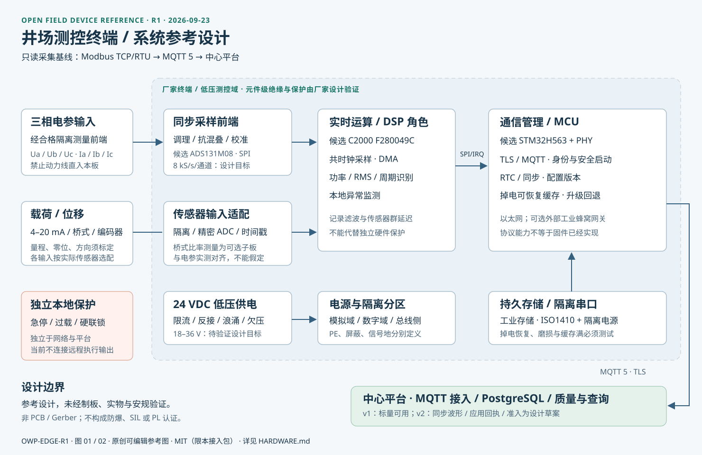
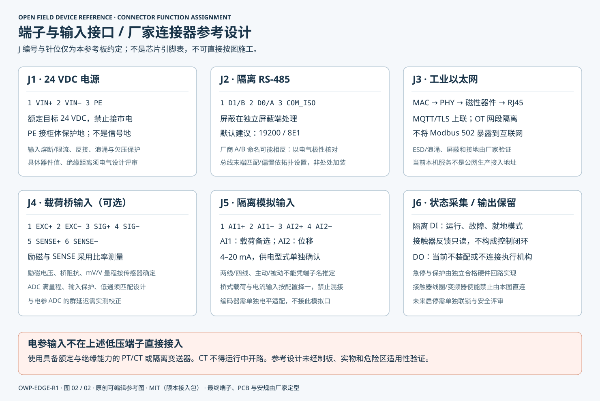

Modbus 设备接入
TCP / RTU，FC03 / FC04 只读采集。点表定义地址、字节序、换算比例和工程单位。
OPEN FIELD DEVICE INTERFACE
让不同厂家的井场终端使用同一套可验证接口接入平台。
OWP-EDGE/1.0 · 2026-09-23 · 基础标量遥测对接版 / R1 硬件参考
IMPLEMENTED INTERFACE
TCP / RTU，FC03 / FC04 只读采集。点表定义地址、字节序、换算比例和工程单位。
MQTT 5、QoS 1、UTF-8 JSON。保留测量时间、设备身份、序号与质量码。
PostgreSQL 幂等入库、原始摘要、质量状态与历史查询。入库后才确认消费消息。
| 项目 | 约定 |
|---|---|
| 上行主题 | oilfield/v1/{gateway_id}/{device_id}/telemetry |
| 报文版本 | oilwell.telemetry.v1；未知字段不得混入 |
| 消息与样本 | 最多 1 MiB / 5000 个标量；UTC 时间、有限数值、质量码 |
| 重发 | 同一 message_id、同一原始字节；不可重写采样时间 |
| 安全 | 远程 TLS、每网关独立身份、Broker ACL；文档不含实际口令 |
| 控制 | 只读采集；当前无真实远程启停 / Modbus 写接口 |
MANUFACTURER ONBOARDING
提供型号、版本、单位、字节序、量程和标定说明；现阶段由运维分配身份与 ACL，不自动注册。
标准 Modbus 终端经平台网关接入，或自主实现 MQTT v1。两种方式遵循相同数据约定。
下载示例与校验器。校验器只检查报文，不联网、不取凭据、不发送控制指令。
检查断网补传、重复报文、错身份、时钟漂移和缓存满；另行完成电气、采样与安全验证。
python validate_telemetry.py --topic oilfield/v1/GW-EXAMPLE/D-EXAMPLE/telemetry --file telemetry-example.json校验器使用 Python 3.10+ 标准库，退出码 0 表示协议预检通过，2 表示不通过。示例是公开测试向量，不是现场测量。
OPEN HARDWARE REFERENCE
以模块接口约束实现互联，不绑定单一芯片品牌。两张图均为可编辑 SVG，可放大、修改并随设备文档交付。


选型依据：TI 同步 ADC、TI 实时控制器、ST 通信 MCU、ADI 载荷桥测量参考。候选器件参数不是整机性能保证。
REFERENCE PACKAGE
BOUNDARIES